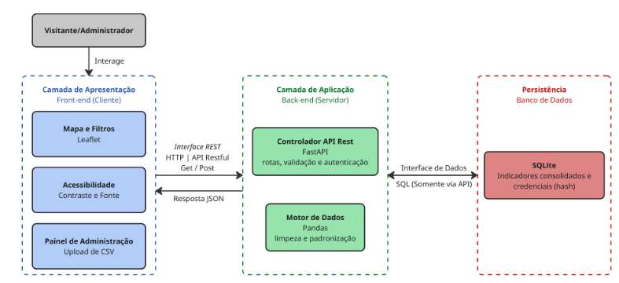

2. Representação Arquitetural¶
2.1 Definições¶
O Brasil Hub seguirá uma arquitetura Cliente-Servidor em Camadas (Three-Tier), composta por três níveis lógicos principais: apresentação, aplicação e persistência.
A camada de apresentação corresponde ao Front-end executado no navegador do usuário; a camada de aplicação corresponde ao Back-end desenvolvido em Python e à API RESTful implementada com FastAPI; e a camada de persistência corresponde ao banco de dados.
A separação entre essas camadas tem como objetivo reduzir o acoplamento entre interface, regras de negócio, processamento dos dados e armazenamento.
A comunicação entre o Front-end e o Back-end ocorrerá por meio da API REST, utilizando HTTP. Respostas e requisições estruturadas utilizarão JSON, enquanto o envio de arquivos CSV utilizará o formato multipart/form-data.
A camada de apresentação não possuirá acesso direto ao banco de dados. Todas as consultas e alterações deverão passar pela camada de aplicação, permitindo centralizar regras de validação, autenticação, autorização e tratamento dos dados.
2.2 Justificativa da escolha¶
A escolha da arquitetura Cliente-Servidor em Camadas foi motivada principalmente pela necessidade de separar responsabilidades distintas do sistema e permitir o desenvolvimento independente das partes da aplicação.
No Brasil Hub, o Front-end é responsável pela interação com o usuário, renderização do mapa interativo, aplicação dos filtros e apresentação das informações. Essas atividades utilizam JavaScript e Leaflet e possuem características predominantemente relacionadas à interface e à experiência do usuário.
O Back-end, por sua vez, é responsável pelo recebimento das requisições, aplicação das regras da aplicação, autenticação do administrador e tratamento dos dados socioeconômicos.
O uso de Python e Pandas permite concentrar as operações de leitura, validação, limpeza, padronização e transformação dos arquivos provenientes das fontes oficiais. A utilização do FastAPI permite disponibilizar essas funcionalidades por meio de uma API estruturada.
A separação entre Front-end e Back-end também reduz o acoplamento entre as equipes responsáveis pelas diferentes frentes de desenvolvimento, permitindo que alterações na interface sejam realizadas sem a necessidade de modificar diretamente o processamento dos dados e vice-versa.
Essa característica está alinhada à organização da equipe definida no Documento de Visão, que distribui responsabilidades entre desenvolvimento Front-end e Back-end.
2.3 Detalhamento¶
A arquitetura é dividida em três camadas fundamentais:
-
Interface do Usuário (Front-end): camada responsável pela interação com o usuário final, exibição gráfica dos mapas e interface do administrador para modificação de dados. Captura interações dos usuários e as envia para a API.
-
Servidor de API (Back-end): construído em FastAPI para tratar requisições, manipular dados com Pandas, executar validações e processar as consultas feitas pelos usuários.
-
Camada de Persistência de Dados (Banco de Dados): responsável por armazenar dados e credenciais do administrador protegidas por hash.
Diagrama arquitetural¶
Figura 1 — Diagrama Arquitetural Genérico

Fonte: elaborado por Lucas Nery.
2.3.1 Descrição do Diagrama Arquitetural¶
O sistema adota o estilo arquitetural em camadas, com comunicação cliente-servidor, dividido em três camadas: apresentação, aplicação e persistência.
Cada camada tem responsabilidades bem definidas e se comunica apenas com a camada adjacente, por meio de interfaces explícitas. Isso garante separação de responsabilidades, segurança no acesso aos dados e facilidade de manutenção.
A camada de apresentação (Front-end) é uma aplicação web executada no navegador e é o ponto de interação dos dois atores do sistema: o visitante, que consulta os indicadores, e o administrador, que também mantém os dados.
Ela reúne três componentes:
- Mapa e filtros: implementados com Leaflet, exibem os indicadores de forma georreferenciada e interativa;
- Acessibilidade: permite ajustar contraste e tamanho de fonte;
- Painel de administração: permite ao administrador, após autenticação, enviar arquivos CSV para atualizar a base.
A camada de aplicação (Back-end) é um servidor em Python que concentra as regras do sistema.
O controlador da API REST, implementado com FastAPI, expõe as rotas, valida as requisições e autentica o administrador. O motor de dados, implementado com Pandas, realiza a limpeza, a padronização e a consolidação dos dados dos arquivos CSV, garantindo a qualidade da informação antes de seu armazenamento.
A camada de persistência armazena os indicadores consolidados e as credenciais do administrador, estas em formato hash. Esse banco só é acessado pela camada de aplicação.
A comunicação entre as camadas ocorre por dois conectores:
- Interface REST: liga a apresentação à aplicação, usando HTTP com requisições GET (consulta de indicadores e filtros) e POST (login e envio de CSV), e respostas em JSON ou mensagens de erro.
- Interface de Dados: liga a camada de aplicação à persistência por meio dos módulos responsáveis pelo acesso ao banco de dados.
Dessa forma, o controlador da API não acessa diretamente o banco de dados, e a apresentação nunca realiza acesso direto à persistência.
Componentes da arquitetura¶
Tabela 3 — Componentes da arquitetura
| Componente | Tecnologia | Responsabilidade | Entrada | Saída |
|---|---|---|---|---|
| Interface Web | JavaScript/Leaflet | Interação com usuários, mapas, filtros e acessibilidade | Ações do usuário | Requisições HTTP e apresentação dos resultados |
| Controlador da API | FastAPI | Receber requisições, validar dados e encaminhar operações | HTTP/JSON ou CSV | JSON, mensagens de erro ou resultado da operação |
| Serviço de Indicadores | Python | Coordenar consultas e filtros | Estado, dimensão e período | Registros filtrados |
| Serviço de Atualização | Python/Pandas | Coordenar atualização da base | Arquivo CSV | Resultado da validação e atualização |
| Módulo de Autenticação | Python | Validar credenciais e autorização | Usuário e senha/token | Autorização ou rejeição |
| Processador de Dados | Pandas | Ler, validar, limpar e padronizar dados | CSV/DataFrame | DataFrame padronizado |
| Banco de Dados | PostgreSQL | Persistir credenciais e indicadores | Consultas e alterações SQL | Registros persistidos |
Fonte: elaborado por Josef Wojtyla (2026).
A arquitetura apresenta três camadas principais e módulos especializados distribuídos entre elas. A camada de apresentação concentra os componentes responsáveis pela interação com os usuários. A camada de aplicação concentra a API, a autenticação, os serviços de aplicação e o processamento dos dados. A camada de persistência concentra o armazenamento das informações.
A comunicação entre as camadas ocorre por interfaces explícitas. A interface REST utiliza HTTP para transportar requisições e respostas entre o navegador e a API.
Requisições de consulta utilizam principalmente o método GET, enquanto operações que produzem alterações no sistema, como login e upload de arquivos, utilizam POST. As respostas estruturadas são representadas em JSON. O upload de arquivos CSV utiliza multipart/form-data, devido à necessidade de transportar o arquivo propriamente dito.
No interior do Back-end não existe uma comunicação de rede entre os módulos. A comunicação ocorre por chamadas de funções e importações entre módulos Python, seguindo a direção definida na arquitetura lógica.
O Front-end depende exclusivamente da API, a API utiliza os serviços e os módulos de autenticação, os serviços de dados utilizam o processamento e o acesso à persistência, e o módulo de autenticação consulta as credenciais armazenadas no banco.
O banco de dados armazena dois grupos principais de informações: credenciais administrativas protegidas por hash e os indicadores socioeconômicos tratados.
O Front-end nunca acessa diretamente o banco, garantindo que qualquer acesso aos dados seja intermediado pelo Back-end.
2.3.2 Modelo de persistência¶
O banco de dados do Brasil Hub será responsável por armazenar os dados socioeconômicos tratados e as informações necessárias à autenticação dos administradores.
A estrutura lógica mínima da base deverá contemplar uma tabela de administradores e uma estrutura para armazenamento dos indicadores socioeconômicos.
A tabela de administradores deverá armazenar, no mínimo:
- Um identificador;
- O nome de usuário;
- A senha protegida por hash.
A senha original não deverá ser persistida.
A estrutura dos indicadores deverá manter, no mínimo, informações referentes ao indicador, estado ou unidade territorial, dimensão socioeconômica, valor, período de referência, unidade de medida e fonte dos dados, permitindo preservar o contexto necessário para exibição e comparação.
O acesso ao banco será encapsulado pela camada de persistência, evitando que os demais módulos dependam diretamente da implementação do banco. Essa decisão reduz o acoplamento e permite uma eventual substituição da tecnologia de persistência sem alterações relevantes no Front-end ou nas regras da aplicação.
2.4 Metas e restrições arquiteturais¶
As metas e restrições arquiteturais foram definidas a partir dos requisitos funcionais e não funcionais do Documento de Visão e têm como objetivo garantir desempenho, manutenibilidade, segurança, compatibilidade e consistência estrutural do sistema.
-
Comunicação por API REST: a comunicação entre Front-end e Back-end deverá ocorrer exclusivamente por HTTP por meio da API REST. Requisições de consulta deverão utilizar GET, enquanto operações de criação ou alteração de dados deverão utilizar POST, respeitando a semântica dos métodos HTTP.
-
Formato de dados: respostas estruturadas da API deverão utilizar JSON. O envio de arquivos CSV deverá utilizar
multipart/form-data. -
Desempenho: as consultas realizadas por meio dos filtros deverão apresentar resposta da API em até 3 segundos, conforme estabelecido pelo requisito B-05. A medição deverá ser realizada em ambiente de teste controlado, utilizando o procedimento definido no roteiro de testes do projeto.
-
Compatibilidade: a interface deverá funcionar em telas com largura mínima de 360 pixels e nos navegadores Chrome, Firefox e Edge, sem quebra de layout ou perda das funcionalidades classificadas como MUST.
-
Segurança: o armazenamento de senhas administrativas deverá ser realizado exclusivamente utilizando valores de hash, impedindo o armazenamento da senha em texto simples. O acesso às operações administrativas deverá ser condicionado à autenticação e autorização do usuário.
-
Padrão de desenvolvimento Back-end: o código Python deverá seguir PEP 8, utilizando
snake_casepara funções e variáveis ePascalCasepara classes. -
Padrão de desenvolvimento Front-end: o código JavaScript deverá seguir as regras de lintagem definidas pelo ESLint, utilizando
camelCasepara funções e variáveis eUPPER_SNAKE_CASEpara constantes. -
Controle de versão: as alterações deverão ser realizadas em branches de funcionalidade, submetidas à revisão por pull request antes da integração à branch de integração definida pela equipe, seguindo a política de branches e Conventional Commits definida no Documento de Visão.